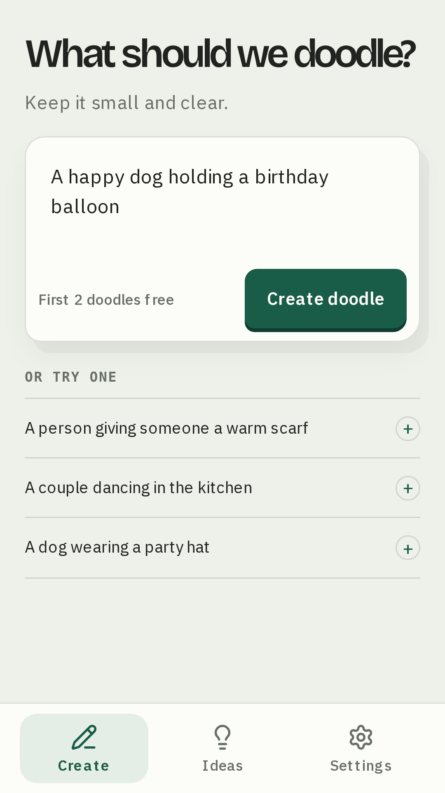
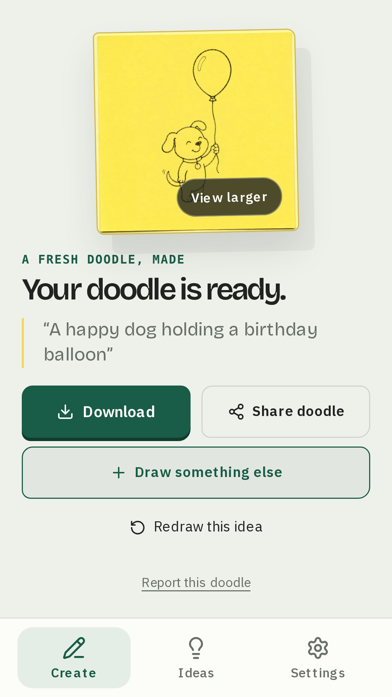
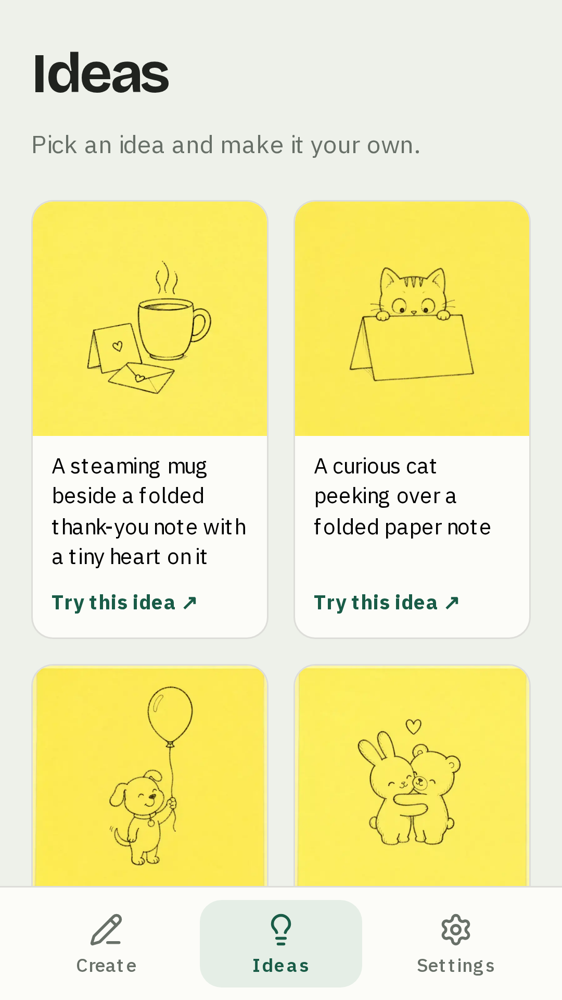
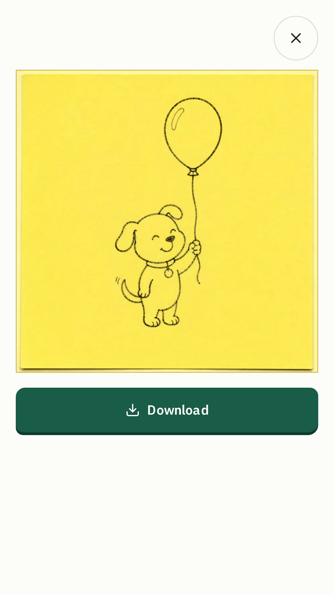
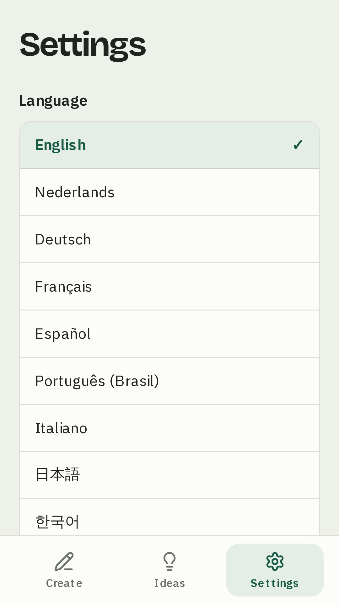

Browser-rendered app UI at 1080 × 1920. Existing example drawings reproduced with local response fixtures. These have not been captured from the Android app or installed through Google Play.

Describe a little momentActual composer, prefilled scene; anonymous two-doodle allowance fixture.

A doodle for a birthday cardActual result screen displaying the existing birthday-dog.webp example via intercepted generation response.

Find a small scene to drawActual installed-mode Ideas screen with the existing app example gallery.

Take a closer lookActual enlarged result dialog; same birthday example.

Settings · additional QA previewActual installed-mode Settings tab. Optional review asset beyond the four primary listing screenshots.